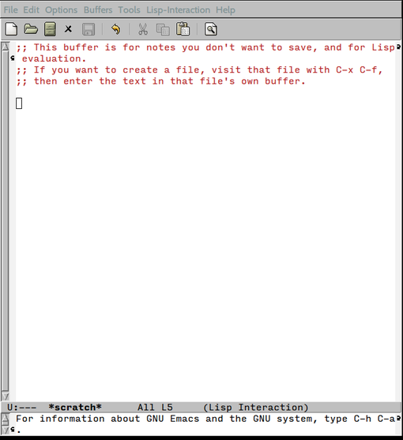
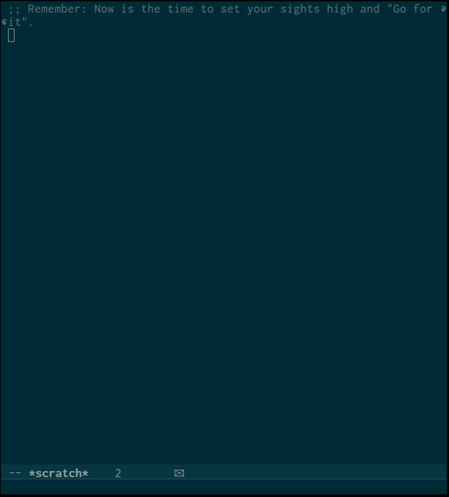

Customizing Emacs's modeline
| Home | About | Gallery | Links |
- Started writing:
- Posted:
- Estimated time to read: 5 min
As disciples of Emacs we are constantly working to build an ecosystem of elisp which supports our editing styles. As we enable various major and minor modes, Emacs tries to do its best to give us reminders of which modes are enabled for the current buffer. I firmly believe that a UI should work hard provide as much relevant information as possible without distracting from the user's focus. The UI should also be as intuitive as possible, allowing the user to self-discover additional functionality as they learn the system.
Emacs is definitely not intuitive, but once a user is accustomed to
the environment, it really wins when it comes to self-discovery of
extra features. Out of the box however, there is a significant amount
of visual noise. Inspired by Emacs, naked, I stripped down my
interface. Two things that bothered me in following "Emacs, naked":
the wide fringe and no mode-line. On the other end of the spectrum is
Spacemacs and powerline. These provide as much information as
possible. Of course there's also diminish, which allows you to tell
emacs which minor modes to show and and not. The trouble with
diminish is that it never played well with my .emacs when Emacs is
run as a daemon (I know there are workarounds, but they bothered me).
After some serious contemplation about which pieces of information in the mode-line were most important to me, I set about trimming it down to size.
|  |  |
| Default UI | Customized UI |
If you want my mode-line without any further understanding stick this
in your .emacs:
(setq-default mode-line-format
(list
" " mode-line-modified
" %[" mode-line-buffer-identification "%] %l %6 "
mode-line-misc-info
mode-line-end-spaces))
(setq global-mode-string '((t jabber-activity-mode-string)
"" display-time-string appt-mode-string))
Since the mode-line is so fundamental to emacs, we have to set the
format string slightly different than other variables. This is
achieved through setq-default. The documentation does a pretty good
job of describing what the various options are, but it was not clear
to me how to achieve the interactivity of the default mode-line.
In my minimal setup, the car of the list is " ", which is a string.
This tells emacs to process the rest of the list and concatenate the
results into a string to be displayed in the mode-line. The next
element of this list is mode-line-modified, which when eval'ed gives
the modification state of the mode-line, but also provides the ability
to use the mouse to toggle the states. The next string prints a "["
for each recursive editing level entered. Next
mode-line-buffer-identification gives the buffer name, and the
ability to left and right click to cycle through the buffers. Then I
close the number of recursive edits with "%]". The last bit of
information I find useful is the line number. If you prefer the
original line information, the function to add is
mode-line-position, this is too verbose for me, and I rarely need to
look at the column, so I've replaced this with the "%l" directive
which gives me the raw line number. The next bit: "%6" gives 6
spaces before any other functions add to the mode line.
The next piece, mode-line-misc-info, includes the variable
global-mode-string which is a catch-all for transient
notifications. The two that are relevant to me are:
jabber-activity-mode-string which displays who has sent me an unread
message on jabber, and display-time-string and appt-mode-string
which display information when I have upcoming appointments in my
agenda.
Once you understand the bits and pieces of elisp that make up the
mode-line-format variable, you can tweak them to include just the
bits that are useful to you. This allows the UI to provide the minimal
amount of information needed for the user to get his or her work done
expeditiously.
If you have any comments, you can tweet me @dec4fc0ffee.